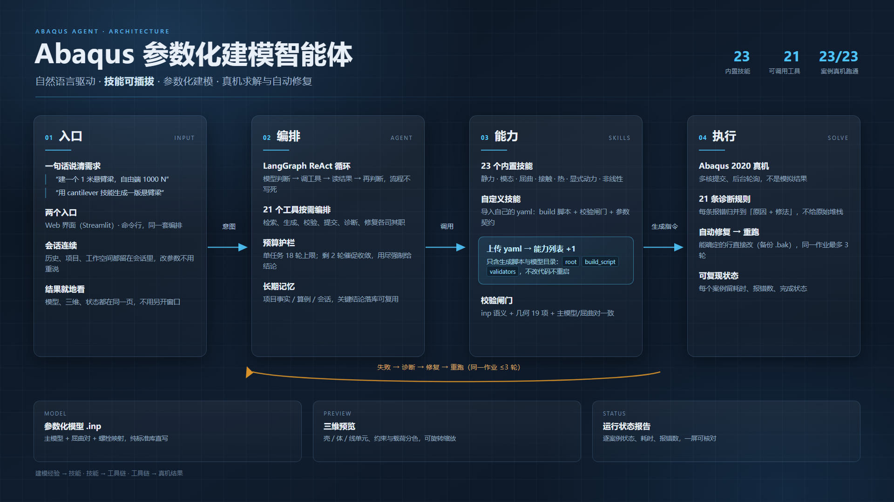

这是一个参数化建模智能体：自然语言进，模型文件和求解结果出。 它不写死脚本，而是把建模经验沉淀成可插拔的技能——技能里写清参数可行域、生成脚本和验收闸门， agent 负责选技能、填参数、生成、校验，出错时自己诊断并修复。
架构讲解 → 导入一份技能定义 → 用这个技能生成模型并跑几何校验 → 真机跑通 23 个案例 → 一个报错作业被诊断、修复、重跑完成。
不是"能聊天"，而是每一步都有可核查的产物。
技能是数据不是代码：生成脚本、参数契约、校验闸门写在 yaml 里。导入后当场生效，不改代码、不重启。
关键字齐全、节点被引用、几何尺寸一致——校验不通过就不提交求解，避免"不报错但结果是错的"。
把 Abaqus 含糊的报错归并成「原因 + 修法」，确定性语法错直接改（先备份），同一作业最多 3 轮。
工具层不依赖 LangGraph，只依赖 Python 标准库，可以单独跑、单独测；编排层才引入 LangGraph。

# 1) 环境 python -m venv .venv .\.venv\Scripts\python.exe -m pip install -r requirements.txt # 2) 跑测试（不需要 Abaqus，纯逻辑） .\.venv\Scripts\python.exe -m pytest tests -q # 79 passed # 3) 起 Web（8502） .\.venv\Scripts\python.exe -m streamlit run agent\webapp.py --server.port 8502 # 4) 或者命令行 python -m agent "用 cantilever 生成悬臂梁 L=100，然后跑结构校验"